第四章：行牌规划
从这一章开始，我们就告别了嘻嘻哈哈，一脚踏入了立直麻将的深水区。我争取用最简短、最凝练的文字，给同学们渗透最多的内容。我们出发咯！
一、什么是行牌
行牌包括做牌、兜牌、弃牌。做牌当然就是以牌效为指导，直奔和牌；兜牌就是指通过反复打出相对安全的牌曲线前进，来最终达到听牌的目的，争取和牌或流局收到罚符；弃牌当然就是破坏手牌形状，只打最安全的牌，期待流局不被自摸的战术。这三种战术动作中，做牌和弃牌是所有中级者都必须掌握的。
读牌是行牌的逆过程，读牌的前提是自己明白如何正常行牌，同时对手也的确在正常行牌。据我了解，不少雀豪玩家都非常看重读牌，然而自己的行牌却并不尽如人意，甚至是四面漏风，千疮百孔。其实，这就是完全没有理解读牌与行牌的逻辑关系。对于大部分中级者而言，与其尝试一巡一次的读牌，不如先做好思路连贯的行牌。将来，通过读牌手段，以一巡为单位，从一种行牌模式突然切换为另一种的行为叫止牌。这是我们后面才能学习的内容。
二、机会手判定
配牌好不好，是立直麻将中一个很重要、很有关注度，也很玄学的东西。然而，已经到了这里的同学们，在打开配牌时，在问候发牌姬之余，其实应该开始养成给配牌打分的习惯了。这就是指导行牌非常重要的第一环：机会手判定。
大多数的配牌都不是机会手。这类牌的配向在平均数3.5左右，成形面子在1个以下，好形不多、字牌不少。就算有那么零星的一个甚至两个宝牌，往往也看不到什么未来。这样的一般起手，即使全牌效做牌立直或副露，平均和牌巡目也在12巡左右，也就是说，中早巡是和不到大多数牌的。拿到这类配牌，最积极的归宿，往往就是对攻胜出，拿到大概三番的打点，或者是兜牌成功，拿走最后的罚符或者其他家的立直棒。硬做非机会手的立直往往不会发生好事情。“不立愚形糯米”（糯米就是“只有一番”的意思，好像是日语音译的）是基本。
少部分的配牌确实是机会手。一个半庄抓住一个机会手，往往就可以达到战略目的。最常见的战略目标就是争一和避四，通过抓住机会手自摸，一下子拉开和另外三家的点差，独占鳌头，是最常见的争一路线；通过抓住机会手，直击其他家与其拉开2倍打点的点差，几乎确定顺位在其之上；或是满贯自摸，狠狠炸掉亲家的庄，直接与亲家拉开一万点以上点差，并迫使亲家去采取避四行动，停止对自家的威胁。这两种方法是最常见的两种令人安心的避四路线。
机会手的配牌往往有以下特点：
（1） 明显的牌形连续性。配牌有成形面子，有连续形甚至两三组好形，即使没有宝牌的加持，往往也可以看到断平手的两向听了。有赤麻将中，立断平的满贯期待很大。同时，这类手牌往往比其他类型的机会手更快、更隐蔽、听牌强度更高。时刻记住手牌的速度会给高度和空间以强大的掩护，断平系机会手是所有机会手中最常见、最重要的。绝大多数上级者都会把立断平当做最普通的好牌。
（2） 明显的满贯副露权。配牌就有断幺、役牌等手役或很近的手役机会。如配牌只有一枚幺九，有朵拉对子，好形均断幺确定；或是役牌对子甚至双役牌对子，数牌有宝牌形状也不错，更有甚者朵拉役牌对子；或是起手就有已经成型的两个宝牌搭子甚至面子；或者是同种颜色的数牌在7枚以上，形状又不错，还有不少役牌甚至已经有役牌对子，往往可以看到满贯的染手路线。
（3） 很强的自亲压制力。配牌就有双东对子、宝牌搭子或役牌对子，甚至有役牌暗刻、数牌形状也不错的亲家，是很恐怖的。且不说更加极端的情况，早巡把双东带红中拍在桌上的亲家，估计是没人敢惹的。即使亲家只是单纯跳了一次符，打点也有7700了，已经相当于子家的满贯打点。因此，立直麻将里有一个很普遍的打点攻防判断（虽然打点判断和攻防判断都会在后面学习，而且极大的因人而异，但是以下这个判断是被很普遍接受的）：3番带跳符的亲家全攻（全攻是全牌效进攻的简称）。再比如说，亲家鸣了双东再鸣客风，随便手切个异色中张，第三色的无筋牌上家估计就不敢再随便打出了。“双东带染，暴力亲满”固然是点不起，自己还在早巡两向听开外的时候，就算点到速度很快的双东aka，亲家5800也是得不偿失。再比如说，亲家手中藏了一组役牌暗刻，连吃两口挂上了一个朵拉一个红五，也不知道到底是在食断还是在埋伏，幺九牌、生张字，其实也都不是什么安全牌。这种两副露的亲家往往会吓退一到两家。
（4） 极大的打点潜力。虽然配牌只是个三向听，但是789的三色搭子已经齐了，甚至有了一组面子或役牌对子。只要起手的字牌再摸一摸对，全带三色的路线就能看到了。如果门清做牌摸到进张，甚至能看到跳满。这样的牌虽然速度不快，但是潜力极大，上限很高，往往后手进攻，一剑封喉。
（5） 有超过三枚的宝牌。立直麻将只有七番的宝牌。独占了一半及以上宝牌番数的配牌无疑是极强的机会手。因为此时其他家打点往往并不都高，这种配牌的速度即使不快，也未必会遭到很激烈的对攻或反抗。因此，除非大一位领先，否则起手金光闪闪的牌，一定要当作机会手去做个五六巡，千万不要有什么“宝牌不靠张就是观赏性宝牌”的玄学想法。即使这样的手牌去看断幺、找手役、等靠张，最后做到一半被亲家先制，无安放铳了，也是没有任何被责怪的理由的。
机会手要以4番满贯为目标，这是指导行牌非常重要的“满贯思维”。非机会手的一般配牌，要有积少成多、步步为营的策略。2~3番最终形的普通行牌路线，是大多数配牌局收支最高的打法。（最终形就是提前规划好5个最优搭子在手牌中的位置，留下一定的手牌空间以容纳安全牌，这一行牌策略一般在一向听或全好形两向听时开始实施）
在必须和大牌的场况下，其实机会手可以通过行牌来创造。最常见的制作机会手的手段就是强染，强行打出所有不同花色的数牌，期待役牌摸对、朵拉色染手进张，甚至是染清一色，给染手提供满贯打点。还有比较常见的制作机会手的路线就是以朵拉为轴，强行拆除朵拉以外的第五搭子，期待立直单骑朵拉一类的满贯路线。但是，这种制作机会手的方法极大损失了牌效，巡目越早，效果越好。
此外，同学们一定要注意，七成五以上的情况，我们是无论如何也和不到牌的，这与雀力无关，与对手无关，与任何场况都无关。因此，非机会手的一般牌我们要接受流局收罚符，甚至要做好流局交罚符的弃和准备；即使是很好的机会手，很可惜的和不到牌也是常有的事。任何天牌的配牌，其实都是要通过行牌来最终和牌的。那么在行牌过程中，就是会发生这样那样的故事甚至意外。以每一巡为基本单位，以每一次自摸为基本单位，冷静的分析当前的局势，做出进一步的行牌规划，是高手的风范。必要的场况下，烂牌也要攻、天牌也要弃，这就是立直麻将，是谁也没有办法的事。
三、围绕宝牌的行牌
宝牌分为朵拉和红五。一般来讲，朵拉的牌效可以被提高到高于自身牌效两级的程度。二八牌如果是朵拉，在序盘阶段往往会被当做必须用上的牌，期待尖张的靠张；幺九牌如果是朵拉，在断平手不明显的配牌下，也不会早早打出。
朵拉指示牌是最关键的朵拉靠张。因为指示牌天然少一枚的山存，以及必然的高利用率，往往摸也摸不到、吃也吃不到。此之谓“瓶颈”。当然了，这是追求打点必然会损失的速度，是很正常的现象。这里我们要注意的，其实是以下四点推论：
（1） 不期待打点时，避免听在朵拉侧。这是很关键的。朵拉侧待牌的荣和率天然低（一定要注意，这可不是说朵拉侧待牌的场况天然差，不想打出朵拉侧牌的想法是人类的想法，与发牌姬无关，该自摸还是会自摸的）。明明和牌就可以达到战略目标，避四、争一、局消化的场况，偏偏就会有一些守财奴拆了好形单坎指示牌。其实，这种场况下，两个好形如果必须拆掉一个，往往也是拆掉朵拉侧的好形。这是同学们必须要注意的一点。
（2） 朵拉筋的铳率天然高、铳点天然低；朵拉跨筋的铳率、铳点天然高，这是自然之理。事实上，立直麻将里有这样一个结论：牌越薄弱的地方，铳率越高。这就是因为待牌天然少的地方，容易成为最终的和牌待牌，也就是铳牌。就比如一个三面好形和一个坎张，往往会先进三面，听在更薄弱的坎张上。再比如说自己手中有三枚5、两枚8，6、7却没见到几张，那么手中的5、8的铳率，就比其他牌更高。（也即：暗刻筋的铳率更高）这个结论十分重要，是接下来的场况分析很重要的一环。
（3） 朵拉侧厚度很好时，往往其他家对于朵拉的利用率较低，速度较慢。这就是所谓的“卡脖子技术”。就比如说，自家手中的雀头是一对指示牌7，那么其他三家里最多只有一枚指示牌7，作为朵拉的8最多被挂在顺子上上一枚。更极端的，如果自家指示牌形成了暗刻，或者对于幺九、二八朵拉而言，尖张形成了暗刻甚至暗杠，那么几乎就没有人再能用朵拉形成顺子，甚至是面子。
事实上，对于朵拉8而言，即使自家手牌有9的暗刻，对于其他家的阻碍作用也是很大的。这种信息是严重不对称的。其他三家必然会围绕朵拉做牌，留下朵拉侧靠张。然而，等待着他们的只能是孤单的朵拉和无尽的摸切。
（4） 朵拉是字牌的情况。因为字牌的自然牌效实在太低，即便连升两级，大概也只会被提升到二八的程度，牌效也没有多高。因此，对于客风朵拉字，实在是用不上而打出的情况很多见，也并没有错。然而，立直麻将里有一句话：有役不打朵拉字。这里的役绝大多数情况是役牌，小部分情况是全带系或染手系的手役。理解这一点是必要的。
之前我们就渗透过一个观点：所有字牌都是役牌，只不过对于哪家而言。因此，我们一定要养成“不乱打朵拉字”的观念。被某一家在序盘就碰到役牌朵拉三的4番满贯无疑是很不舒服的。那么，在四家的朵拉字都难出手的情况下，天然有手役的一家就占有了极大优势，因为这一家的朵拉字可以随时用上，既不需要立直去单骑，也不需要拆牌去凑对。如果有役的一家反而先打朵拉字，解放了大家手中的朵拉字，这无疑就是放弃了自己的优势。
此外，还有两点同学们也要注意。
首先，朵拉字的听牌形一般是单骑，少部分是双碰。单骑朵拉字很强，同学们要有这个正确观念。单骑朵拉字一旦成功听牌，剩下的山存就会成为其他家的定时炸弹。因为在大多数场况下都负担不起朵拉字的铳点，因此，发牌姬把剩下的朵拉字发给谁，谁的手牌几乎就毁了，唯一的归宿就是拆了雀头硬做四面子同听朵拉字。而且，对于立直家和明显有役的副露家而言，在朵拉是字牌的情况下，往往事实上不听朵拉字，也会让朵拉字变成定时炸弹。这是因为朵拉字的牌效普遍被大家提升了两级，解读普通的牌河手顺很多时候是失效的。甚至在某些场况下，提前拆掉雀头去单骑朵拉字都是无可厚非的。因此，立直麻将里有这样的结论：朵拉是字牌时，副露手的打点期望变低，立直手的听牌强度变高。
其次，如果朵拉字是单纯的自风，那么往往做牌时就可以更加灵活。看断平手时，早早打掉这种自风朵拉字是完全可以的。或者单纯期望降低其他家的打点潜力，在序盘处理自风朵拉字也很不错。这里只需要注意“有役不打朵拉字”的结论就好，面对明显有役的立直家或副露家，即使是自风朵拉字，也不要轻易打出为好。
对于红五。我们在这里记四个结论就好。
（1） 手牌中的红五价值略高于朵拉。这是因为两点：其一是朵拉的天然牌效很有可能不高，但是红五的天然牌效肯定是几乎最高的那一类。其二是因为朵拉侧待牌存在瓶颈，也会被大家警戒。而红五就显然不会。如果连可能存在的红五都要完全警戒的话，那干脆三色中张都不要出手好了hhh。这显然是不行的。
（2） 期待打点时的红五价值不如朵拉。这是因为朵拉有四张，确定进张的红五只有一张。坎朵拉听牌必定会大一番，而坎5听牌只有四分之一的概率坎到红五大一番。一般来讲，红五的存在只会成为高目期待。
（3） 红五的存在会使空切变多。已经到这里的同学们或多或少都对读牌有个一知半解。空切就是指手切与摸到的牌相同的牌的行为。因为红五大一番的原因，大家往往会在摸到红五时替换出手牌中普通的5，这就造成了空切。读牌时5的手切是最应该关注的，隔巡手切的第二枚5往往是摸到了红五的空切。
事实上，读红五的手段还有不少，我们当然不会在这里说的太多。目前，同学们只需要了解上面的那一点就好。实战中，读三枚红五的流向是判断某一家打点范围的重要一环。我们会在后面一起学习。
（4） 同时是朵拉的红五（朵拉aka）是最重要的手牌价值。很难有比朵拉aka再大的手牌价值了，朵拉aka对打点和牌效的贡献都是巨大的。在绝大多数场况下，往往使用不惜拆掉幺九雀头食断、拆掉愚形第五搭子甚至好形第五搭子、始终占用一枚手牌空间等待靠张等等很“极端”的方式去保住朵拉aka，都是很常见且必要的。此外，能用一个面子确定容纳朵拉和红五的搭子也有与朵拉aka相同的手牌价值，往往也是必须保下来的形状。常见的愚形有朵拉是3、4的30坎（0指红五）、朵拉是6、7的07坎、以朵拉aka为轴的两坎等等。

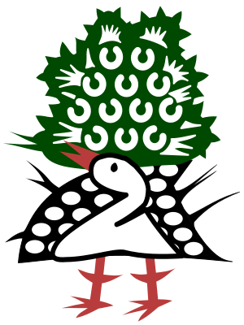
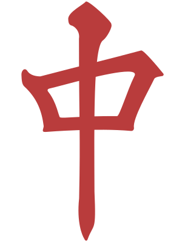
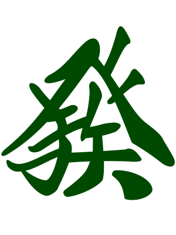
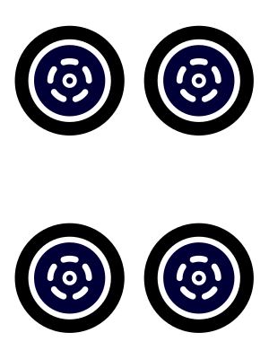
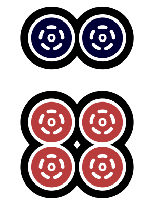
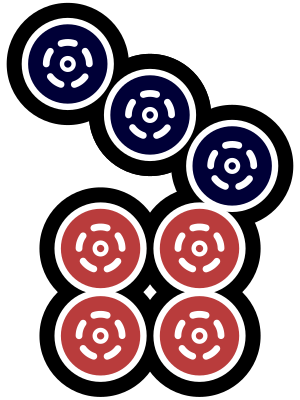
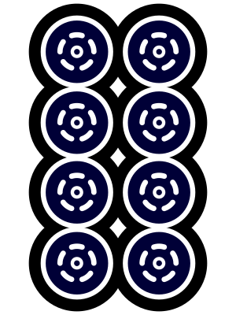
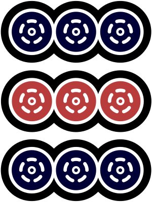
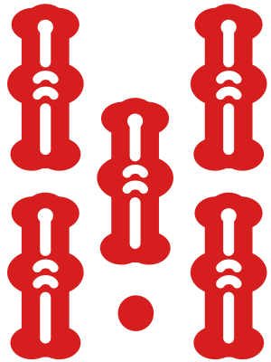
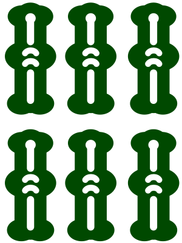
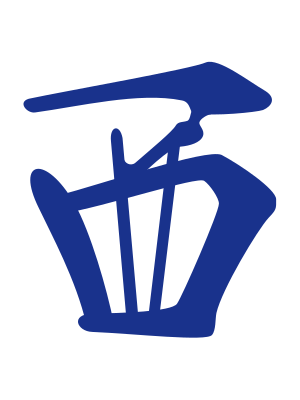
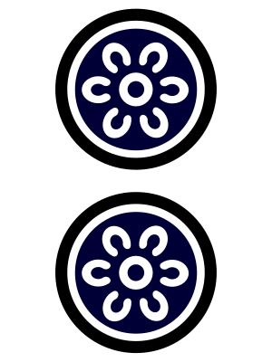
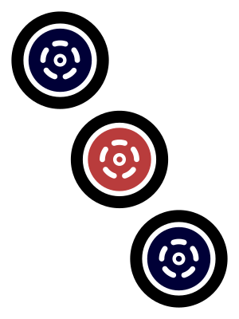
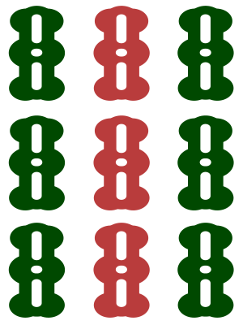
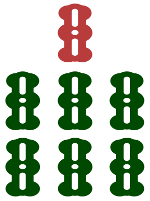
举个例子，主视角下家的二之宫花在绝望的南四发出了最后的怒吼。不管主视角是多么的不愿意相信，在这种场况下，毅然拆掉了手牌价值07坎立直的二之宫花必定是四暗刻机会的立直（通过读早巡的牌河也能发现下家在保留生张和场况较好的单骑待牌去做对子手，准确读出这个是我们后面要学习的）。那么，主视角如果不想被役满炸庄，被下家逆转48000点差、被对家逆转8000点差吃四的话，就绝对不能再防守。哪怕打出下家的铳牌去逼迫下家荣和满贯或跳满保素点，都是比被炸庄吃四更赚的选择（当然了，要不要见逃就是下家的事了，主视角不需要考虑这一点）。更有可能、也是更有利的情况是自家做牌追立，或者找个机会电报（电报就是故意喂牌或送和）大一位的上家甚至兜牌进攻的对家。
这个例子涉及到的知识太多，我们肯定是无法现在就学透的。目前，同学们只需要明白，在急需保素点的情况下拆掉了手牌价值07坎的下家，一定有比这两番的价值更高的手牌，结合场况也就只能是四暗刻机会的立直。
四、役牌的行牌
役牌作为字牌，自然牌效其实是很低的。然而，正是因为役牌的自然牌效很低，役牌是很容易被不需要他们的人打出的。因此，手中的非朵拉役牌对子，尤其是非朵拉的自风对子，往往是很容易碰出的。一旦碰出了确定有役的役牌，和牌也就不是那么困难的事情了。我们前面也学到过，幺九数牌的牌效很容易被孤张役牌逆转。这就是背后的道理。
关于围绕役牌我们应该如何行牌，需要学习以下六点。
（1） 期待碰出的役牌当暗刻。这是立直麻将里非常有名、也非常重要的役牌行牌准则。因为碰出役牌往往比吃到数牌或数牌愚形进张简单的多，因此，在数牌形状还不错，搭子比较齐全的手牌条件下，役牌对往往不成为雀头候补，会被当作成形的面子处理，在手牌的其他形状部分继续争取满足“两雀头最强理论”。此外，役牌对的这一特点会留下多一枚的手牌空间。因此，有役牌对子的配牌是更好改良的；即使是准备役牌后付的牌，往往多出的那一枚手牌空间也可以留下一些其他手役的天枰、额外的雀头候补，或者是应对立直家的安全牌。
（2） 数牌形状不好，或染手搭子不齐时，三役牌当两坎。这是立直麻将里很有名的一句结论。这背后的原理就是我们刚刚学习的第一点。因为无论是数牌形状很散的手牌，还是已经准备染手的手牌，都是很缺手役的。那么，役牌一定是期待摸对、期待碰出的。那么，孤张役牌的牌效就会得到进一步提升。对于孤张役牌组成的这种“弱搭子”，集齐三枚之后，其牌效往往就会来到近似于两坎的级别，可以提供9枚进张（两坎提供8枚进张，而且这9枚进张任意进一张就可以看作一个成形面子的完成）。同学们注意，如果存在损2的役牌，两坎的牌效就被破坏了。总之，同学们在配牌不太理想时，可以关注一下役牌的收集。
（3） 双役牌对子很强。双役牌带染和双役牌对对是很强的满贯路线。因为役牌对子容易出面子的特点，导致这两种情况下的手牌往往出人意料的很快。两个役牌面子往往可以迅速完成，手牌其他部分只需两面子一雀头就可以和牌。
因此，往往在配牌已经有一组役牌对子的情况下，其他的孤张役牌就更不想打在数牌幺九、甚至带5筋的二八浮牌前面了。但是，由于三役牌当两坎的牌效会在其中一种役牌摸对之后大打折扣（基于弱搭子三枚理论），往往就只会期待摸对的役牌碰出。因此，留下一对役牌加两枚孤张役牌的手牌是极其挤占数牌空间的。基于此，立直麻将里有一个很经典的序盘读牌技巧：只先切一枚役牌的手牌往往没有其他役牌对子。
（4） 对于某一家而言，役牌最多只有5种。役牌后付是很常见的副露手。因此，如果某一副露家的打点明显较高，或是亲家已经副露，自家手牌又不快的情况下，往往扣下副露家很有可能需要的役牌是明智的选择。

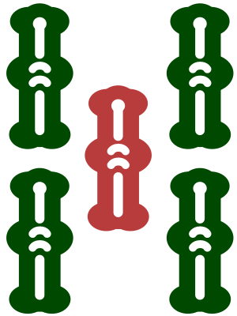
比如主视角的这个中，摸切的好过分啊就！明明东和南都已经通过，发已经被亲家藤田佳奈副露，甚至藤田佳奈还明显在朵拉色染手。这种手牌形状的三元牌怎么可能就这么打啊喂！这里，直接先跑九条瞄准789三色和朵拉六条的天枰，或者直接打四万固定万子侧的相离两坎，不期待亲家染手色的九条双碰进张，是比较好的两种打法。如果在这种手牌形状下，去硬打生张中，或者干脆懵懵懂懂的无意识摸切了生张中，那下面这种再也难以争一的结局就是要被接受的。
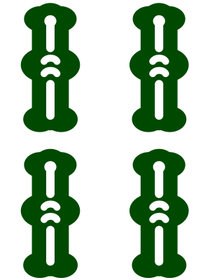
- 役牌 發1番
- 役牌 中1番
- 混一色2番
- 寶牌1番
- 紅寶牌1番
（事实上，藤田佳奈一直连庄到了十本场。在这一局取得了绝对优势之后，藤田佳奈开始肆无忌惮的先制和追立，来回直击和自摸，一炮不点，狂吃了大家的分数。主视角璃央可以说是罪魁祸首、难辞其咎。）
（5） 役牌行牌规划指导序盘字牌手顺。由于这样那样的役牌场况的存在，序盘的字牌手顺是极其复杂的课题。我们在这里不进行过多的探讨。只希望同学们记住最常见的几点：不想让哪一家副露，就先切哪一家的自风；不想让下家干扰做牌，就先切下家的自风；想让哪一副露家帮忙局消化，就在第一副露之后以场风、三元牌、副露家自风的手顺清空所有的字牌；不想让哪一副露家继续推进手牌，对于副露家的生张役牌，甚至是现一字役牌，就都可以扣住不打。
（6） 切宝牌的立直，役牌要被第一警戒。因为“不立愚形糯米”的共识，往往会保留朵拉和红五的好形靠张作为打点改良。如果立直家连宝牌都直接切出立直，其愚形打点来源很多都是役牌的双碰。当然，普通的断平手好形立直用不上宝牌的情况也很常见，这里不能一概而论，进行盲目、生硬、片面的读牌。
同理，鸣断幺牌打大中张的行为，往往也与役牌的后付听牌甚至对对有关。
五、配牌的行牌
以下这五点是很实用的配牌路线规划准则，希望同学们牢记在心。
（1） 起手一面子两好形，甚至更好的情况，要找平和面。常见的操作是打出孤张役牌，留下客风和幺九数牌，以期待摸进平和的雀头。当然，如果平和面连独立雀头都有了，那就把这些幺九统统打出，去看断平手立直。
（2） 反之，起手零面子，有两组愚形，甚至是更糟糕的情况，要以役牌或食断副露手为主。此时的役牌牌效甚至在浮牌二八之上。
（3） 包含字牌在内，起手有染手4搭子，异色数牌没有好形，或更极端的配牌情况下，配牌就要看染。此时，鸣出染手色中对牌形连续形贡献不大的对子和愚形、鸣出役牌甚至客风对、先切同种异色浮牌，就是一般普遍的打法。
（4） 起手就有4对子，面子手在三向听以上，以七对为主的变则手就是行牌主线。此时，先切浮牌二八、跟切地狱单骑（地狱单骑就是只有一枚山存的单骑待牌，简称地狱单）、保留孤张役牌、留下靠边的、场况更好的单骑待牌就是明智的选择。
（5） 起手全带搭子、三色确定的搭子齐了，或更好的配牌情况下，瞄准全带系、三色系的手役是兼顾速度与打点的好手。一定要注意相比于断平系、染手系、甚至对子系的手役而言，全带系的手役是损失牌效的。实战中，一定要在搭子已经齐全、能看到确定的全带或三色路线时再去谨慎副露。
此外，这里有一个简算小技巧，用以计算全带和三色手役的确定度。
浮牌幺九确定全带，浮牌二八确定1/4全带，尖张3、7一般不以全带搭子为主线；坎张、边张确定三色，每一个好形确定1/2三色，中张浮牌一般不以三色搭子为主线。同学们可以在实战中应用与体会。
六、围绕浮牌的行牌
好的浮牌是很强大的改良，手牌空间最应该容纳强浮牌，其次才是辅助牌和安全牌。如何保留和制作浮牌，是行牌的重要考量。
（1） 浮牌的保留。一般来讲，带4、6筋的浮牌幺九和带5筋的浮牌二八都不是什么好浮牌。广义上，带半筋（半筋就是大中张一侧的筋）的中张靠张牌效也会略打折扣。无筋的中张浮牌可以视为强浮牌。行牌过程中，两向听以上的手牌往往会保留一到两张强浮牌。
（2） 浮牌的制作。手牌初期的中张对子往往不会用作最终雀头。那么在满足两雀头最强理论的前提下，拆掉中张对子，退化为强浮牌等待好形靠张是常见的行牌战术，此之谓“拆对留孤”。然而，往往在手牌其他部分推进向听后，拆对留孤战术会使下一向听的进张数被逆转。这也是两雀头最强原理的必然体现。
一般来讲，带愚形的一向听不会用拆对留孤改良形状。一向听以上速度较快，浮牌不会保留很久的牌也不适合拆对留孤。拆对留孤是牺牲了当前向听的进张数和下一向听的形状厚度，换取了最强的一向听或最强的听牌强度的高级战术。
举个形象一点的例子，我们在之前学习RNA形时，讨论到的夹对拆轴战术，其实就是一种拆对留孤战术。只不过这个所谓的“孤”张，是相对于改良搭子而言的，而不是相对于形成搭子而言的。正因为两坎轴作为单张的牌效类似于好形，作为对子没有类似好形的牌效，因此早早拆掉是符合牌理和牌效的。
更进一步的，如果牌姿是113355、78，其他部分是两面子，那么拆掉两坎轴3就是唯一正打，这是自然的。然而，如果牌姿变成113355、88，其他部分是两面子，那么其实打1或打5也是不错的选择，至少不亏牌效。
这就是因为雀头独立的情况下，拆对留孤会阻碍两雀头牌形的进一步延展。甚至，在上面这个例子里，因为一杯口这个役种的存在，还有我们会在后面学到的引挂小技巧，我可能更加倾向于在实战中打5，考虑到红五进张就会打1，类似牌姿可能很少会真正在这个不太好的一向听直接打3，来到一个愚形确定，听牌强度不高，牌河信息比较明朗的立直听牌。当然了，这些涉及到读牌与设计牌河的知识，不是我们现在需要探讨的内容。在这里，同学们只需要记住两点就好：
（1） 拆对留孤战术是强战术。往往导致一向听牌效、听牌强度均较高。
（2） 拆对留孤战术的缺点和弱点都是暂时的。因此，巡目越早、向听数越远，拆对留孤战术就会越强。除非全好形一向留作改良，否则不在一向听使用。
七、弃和基础
弃牌，也叫弃和，又被叫做“下车”，我一般会这么叫。其中，完全没有安全牌的下车叫做“跳车”。弃牌是立直麻将中非常重要的行牌策略，永远在做牌进攻的人是无法继续上分的。此外，无论什么时候，弃和都要遵从一定的手顺。正所谓“有序下车，开门请当心，下车请注意安全”。接下来，我们就要分四种情况，一起来学习基本的弃和情形，来了解什么时候就要去考虑安全下车的问题。
（1） 被恐怖的立直手先制，或被恐怖的副露吓退，是最常见的两种下车情况。比如，四位的这种立直（下面的第一张图），或者一位的这种副露（下面的第二张图），就很难再去反抗了吧。面对第一种情况，如果还要一发冲六条维持全牌效一向听，或者面对第二种情况，还要全牌效打六条去固定坎朵拉五条的愚形搭子，偶尔一两回可能无事发生，但长此以往，能赢的概率其实就微乎其微了。

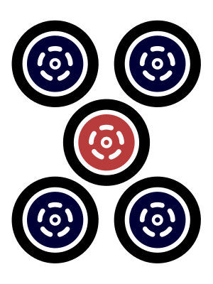
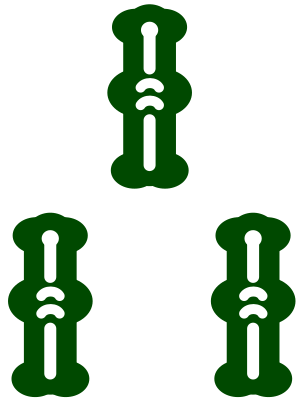
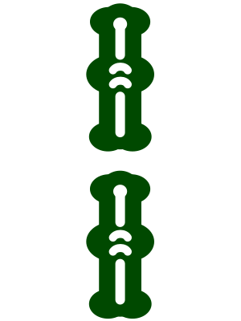

当然，即使主视角的汉娜和相原舞都防住了恐怖的大牌，但是自摸是谁也防不住的。也许，无论汉娜和相原舞做出怎样的努力，在特定的某一局里，都改变不了被炸死的命运。然而，同学们一定要意识到，这样的防守是必要而且十分恰当的，即使在结果上，这两张六条都不是铳，扣下这两张六条也是最合理的选择。牌谱检讨是好习惯，但是千万不要认为，扣下不是铳牌的牌而弃和“像个小丑”或者是用更加过分的说法来“检讨”自己甚至其他家。同学们一定要切记，防守不要结果论！这是在后面我们一起学习如何防守时最最最重要的一点。
事实上，汉娜第一半庄吃四，相原舞第二半庄吃三，输掉的原因如下：
- 立直1番
- 門前清自摸和1番
- 平和1番
- 一盃口1番
- 寶牌1番
- 裡寶牌2番
- 役牌 發1番
- 對對和2番
- 三暗刻2番
- 混一色2番
- 寶牌3番
- 紅寶牌1番
其实重点是，为什么这两只一姬的立直和副露会如此可怕。图一，对于这种大四位的晚巡立直手，很难相信只是一两番的小牌，他一定是在努力做大牌，才会在机会已经不多时悍然立直。即使没有事实上这么恐怖，只是一把普通的4番满贯，主视角点了这种牌也是很容易吃四的。相反，大一位的中早巡立直其实很有可能是好形无手役的局消化。图二，对于这种大一位的晚巡副露手，很难相信只是食断。副露有风险，大一位没有必要为了一两番的小牌完全放弃防守。即使没有事实上这么恐怖，朵拉aka带染的满贯总还是有的，总之这一定是天然的大牌。相反，平场的晚巡副露手其实很有可能是兜牌的小牌甚至刮罚符的形听。
（2） 手牌质量太差，完全难以进攻。这也是下车的常见理由。强烈希望同学们在两向听以上时，不要去全牌效进攻立直家。
然而，我们先来看一些不能弃和的情况，这显然是更重要的。
下面主视角璃央的这手牌，是当然不可能退却的，手牌是满贯一向听，同时根本没有几张安张。“安张比较充足”且“手牌价值较低”是下车的根本。

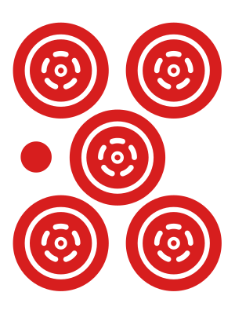
这一打只有二万或八万两选，不可能打任何其他牌。事实上，主视角的璃央长考打出二万，上家的2、5、8万跳满三面听被亲家的糯米小牌头跳，主视角在活过这一死局之后成功吃到大二位。至于二万和八万有什么区别，我们会在后面再来一起学习。这里，同学们只需要明白一件事就好：这种牌姿的放铳是不可避免的，有些牌不放铳是鸡打。
同理，下面这手牌也是不可能退缩的。一秒钟都不要犹豫，把八饼横出去，拍在桌子上才是唯一正打。不要说出什么“边七万好差啊”、“一发太可怕啦”、“八饼是朵拉侧欸”、“万一被对家的大牌直击怎么办啊”甚至是“默听应该能偷到下家吧”这种莫名其妙的理由。一发打出八饼是不可能再偷到任何人的，放铳没那么容易，这种场况吃四也是几乎不可能的。因此，这种牌如果你都要因为害怕而弃和，可以说麻将对于你来说已经不是那么重要了。
自己的牌很大时，仅仅因为某一张牌的铳点而害怕的思考方式是绝对错误的。在一发巡乱拆牌，过了一发又猛猛进攻的乱象屡见不鲜。其实，一发和宝牌都不影响铳率，“不因一发和宝牌而可怕”，这是进攻的基本。

因此，同学们，在摸到这两张二饼时，就是发牌姬考验我们胆量的时候！二饼是我的，你们的点棒也都是我的，我跟你们拼啦！这种想法是会赢的，不要因为曾经输了一两把而懊恼和怀疑。其实，接下来我们还是会输很多把类似的牌的。然而这些都不重要，我们打对了，早晚会赢的，不是嘛？
- 立直1番
- 門前清自摸和1番
- 三色同順2番
- 純全帶么九3番
- 寶牌1番
- 裡寶牌1番
这就是勇敢者的奖励！同学们，遇到类似的天牌机会手，不要犹豫，冲啊！
去掉类似的不能下车的情况，其实就都是可以下车的情况了，简单吧？其实，这个问题本身很难，但是对于绝大多数的一般牌而言，直线做牌、兜牌防守还是弃和下车，一直是有分歧的。比起背下来一大堆定式，形成判断风格才是重点。
同学们面对下面这种牌时，可以按照自己的风格来做出相应的行牌规划。

主视角藤田佳奈全带朵拉二,价值3200all的手牌已经振听。场上还有三枚红五、两枚一饼有可能在副露家的上家二之宫花手中。面对七条刚被下家青鸾打出、九条通过、八条完全没过而且有一定铳率的情况，藤田佳奈应该如何行牌呢？
这可真就是见仁见智了。本人倾向于摸切八条。同学们完全可以有自己的道理、思考和意见。事实上，要不要把手牌副露成藤田佳奈这样，也是个很好的问题，这就更难了，也更有分歧了。
然而，下面主视角八木唯这种手牌是无论如何都坚决不能再去做牌的。

同样是摸到了五八条这个筋组，为什么八木唯这里就不再进攻了呢？那是因为在八万已经损二的情况下，自己一向听的手牌质量不足以支撑做出打两无筋、朵拉侧五条对攻的选择。此外，上家一发吃一万打幺鸡，明显也是进攻信号。这种牌还要去对攻两家的和率是微乎其微的。事实上，这个坎张损二的两坎一坎一向听即使在自亲的前提下，手牌质量也仅仅相当于普通好形两向听的程度。
最重要的是，这里我们只要下定了弃和的决心，就可以拆打幺鸡，再拆出二万暗刻，从容下车了。而且，自家是有一定领先优势的一位，立直家是四位，被直击很有可能前功尽弃。此外，这种场况下不一定有很多巡目，对攻的上家和对家往往会在几巡之内分出胜负，类似场况下的安全牌数量不一定要求十分充足。
相信同学们已经注意到了，这三组例子当中的每两个例子当中，主视角这一巡自摸到的手牌都是差不多一样的。本人费了一些周章，去找到摸手差不多的例子来跟同学们一起学习，就是为了给同学们传达一个信号：
单牌没有好坏之分。摸到什么牌要进攻、摸到什么牌要防守，以及攻防要做到什么程度，都是由整体的手牌质量、具体的场况和安全牌的枚数共同决定的。
最后，给同学们一句挺重要的话，同学们可以认真体会一下：
做牌的麻将，以12巡为目标；弃牌的麻将，以18巡为目标。很重要哦！同学们可以结合前面的例子或自己实战的例子感受一下。
（3） 坚决不能接受点炮的情况。这种情况也很常见，一般都会坚决下车，实在没有充足的安牌甚至会跳车。比如下面的例子。

主视角的青鸾居然切出了朵拉六万默听！简直是太过分了！先不说切出六万之后，手牌已经完全失去了对攻的价值，即使和到了平和糯米的1000点，对于逆转大一位的亲家也无济于事。
最关键的是，六万对于上家和下家来讲，都是最危险的牌之一。无论是点到上家的满贯，从此被上家拉开巨大点差，还是点到亲家的满贯，不但没有局消化还损失了大量的素点，甚至在将来有吃四的风险，都是极其得不偿失的。
此外，这里也不能去拆三六饼找雀头或拆三四条等朵拉靠张。因为这四张牌对于亲家也不安全。总之，这就是一个无论如何都不能接受点到亲家的场况。
因此，这里应该按八饼、一万、四饼的手顺弃和下车，即使这对于上家而言是跳车，在跳车的过程中点到了上家可能的四七饼听牌，铳点也远远没有六万大，同时进行了局消化，也有希望在南三、南四两局继续争二。
事实上，这里我会按八饼、一万、九饼、五饼的手顺弃和，不太相信亲家会听到五饼或九饼。当然这是后话了。
当然了，这里切六万立直也是绝对禁止的。
（4） 要打的牌铳率过高。好形听牌只有18种，如果通过排除法已经只剩下两三个筋组的好形听牌可能的话，往往不再打出对应筋组的牌是比较明智的。
比如下面这个例子。

主视角浅仓透通过兜牌，七对已经成功听牌，打出九条就可以单骑七条。（注意打七条没有听牌哈，立直麻将不允许七对有重复的对子）然而，六九条这个筋组对于立直家过于危险（事实上，考虑到读牌因素，五八条铳率很小，没过的筋组只剩下五八万、六九饼和六九条三组）。如果上家是普通的断平手立直，九条的铳率在17左右，综合铳率在15以上，本人已经很抗拒打出这种铳率的牌。（数字是怎么算的同学们别急哈，后面我们会一起学习的，这里就明白只剩下三个筋组可选，而且九条自己手中还有很多，铳率比另外两个筋组更高一点就好。）
甚至在这里不惜去开杠找对对。（当然了，这很难找到的，几乎就是放弃了）

事实上，主视角的浅仓透确实在东一局就躲过了二之宫花六九条的满贯大铳，最后成功吃一。发牌姬不仅会奖励勇敢的战士，还会奖励冷静的学者。同学们一定要有这样的信心。
八、兜牌的粘性与弹性
兜牌是个防守的话题。我们会在后面大篇幅的学习。这里，我们先来渗透两点：兜牌要有粘性和弹性。
兜牌的粘性就是指兜牌要重视罚符，不要轻易的放弃收罚符的机会。当然了，类似于上面我们举的例子，很多情况下是很难听牌的，那就不能硬看罚符。
兜牌的弹性就是指兜牌是介于做牌和弃牌之间的过程，而不是所谓的“半攻半防”。事实上，对于中级者而言，极化攻防是重要行牌目标，也即攻就是攻，全牌效进攻；防就是防，不该点的炮一炮也不点。真正有弹性的兜牌都是以每一巡为单位，以场况和读牌的耦合为基础，随时切换攻防模式，迅速止牌的。这也是我们在很后面很后面才会期待的目标。
九、绞杀与电报
绞杀，就是对某一家实施极端的防守，一般是下家或亲家；电报，就是故意给某一家喂牌甚至直接送和，一般是下家或副露家。
比起绞杀和电报的手段和技巧，二者的前提是更重要的。
绞杀的目的是防止可能出现的大牌或竞争家（竞争家就是距离自家点数比较近，存在明显的顺位竞争关系的某一家或几家）的好牌、快牌、大牌。比如下家的竞争家副露了自风朵拉，那么自家往往会在手牌两向听以上时实施绞杀。再比如，亲家的染手往往会被上家绞杀。
电报的目的是局消化。因此，在争一麻将中很少有电报亲家的行为。同时，因为里宝的存在，电报立直家是要背负一定风险的。一般我们电报的对象都是副露家，尤其是下家。此外，电报一般出现在顺位更有可能固化的南场。
电报是有大战略目标的大战术动作。往往电报会持续一整局，电报家往往会放弃立直甚至做牌，用很明显的牌河信息告知被电报家自己的电报意图。
一般来讲，m规的大一位亲家不会轻易电报。这是因为连庄会使素点进一步提升，电报本身也会损失一部分素点，即使损失不大，往往也并不情愿。玉之间是电报的主战场，来自于雀圣的大量优质电报经常导致初入玉之间的初级者、中级者束手无策。此外，任何除自家四位以外的场况都有电报的角度，成功的电报是结盟的宣言，是保住已有顺位的捷径。
电报的前提是场况判断和打点判断。这个我们后面会集中所有力量去学习，现在同学们千万不要着急，学会如何接电报就好。
电报是配合。被电报家必须有“接电报”的场况、意图和行为。一般来讲，接电报是用一部分打点的损失，在一定的巡目里换取了极大做牌速度的行为。电报往往不会持续到河底，中早巡的电报是最常见的。此外，场况的骤变（最常见的是立直棒的出现）往往会阻止进一步的电报，此之谓“截电报”。
接电报是“人为刀俎，我为鱼肉”的被动行为。实战中，电报家可能随时因为各种各样的理由停止电报。因此，慎重接电报是必须的。只有存在明显的双赢场况关系，才能以接电报为主线做牌。
主动放弃不必要的打点，是接电报的基本。比如和牌即可逆一的场况，希望与四位相差3000点、与二位相差12000点的大三位上家电报自家，那么，打出所有朵拉，甚至不惜拆出朵拉对，才是真正接电报的行为。否则，体现不出接电报的“诚意”的话，无法负担三番铳点的上家是不会发出电报的。
此外，通过迷惑竞争家，拆出朵拉对，手里竟然还保留两枚红五，甚至四枚朵拉拆出两枚还留有两枚，以难以想象的三番甚至满贯打点的手牌形状，骗出竞争家的电报从而逆转的行为，叫“骗电报”，这是极其不常见的场况和策略，同学们了解就好。

比如上面的例子就是一次极其优质的电报。
主视角的八木唯在中巡主动好形假听并最后拒听，以同时电报对家和下家3900以下的小牌、绞杀上家的亲家为主线，不断收集牌河信息，在最后一巡时终于完全掌握了对家和下家的手牌信息和打点情况。简单长考之后，判断出下家的手牌打点更大，有可能在5200以上，是自家负担不起的铳点；判断出白对子是对家的手牌，且打点不可能超过三番跳符；随后毅然拆出生张白电报对家，通过1000点的放铳阻止了下家最后一巡可能的朵拉西风单骑满贯自摸，成功守住了一位。同时，对家坂本辰马也通过接电报逆转了微差竞争家，成功获得二位。
这个例子存在大量的新知识，我们现在当然不会去学习如何发电报。同学们在这里只需要了解电报也是正常行牌策略的一种，不要惊讶，更不要生气就好。
好了，行牌规划这一部分要告一段落了。同学们应该已经掌握了各种配牌的行牌、特定场况下的行牌和简单的绞杀与电报。我们会在防守的章节里深入学习兜牌。下面是综合考验前面所有知识的一大关，同学们，坐稳扶好，我们出发咯！